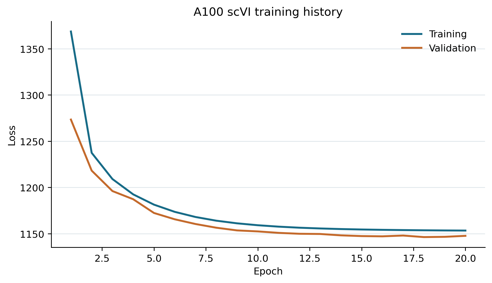
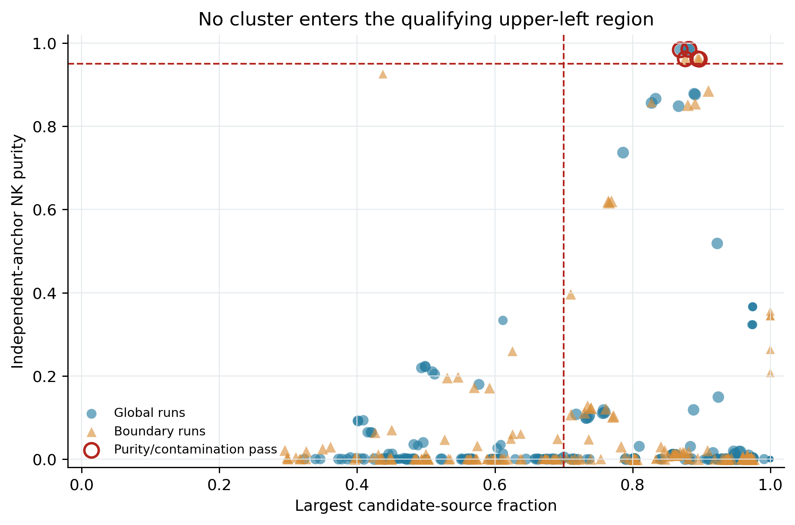
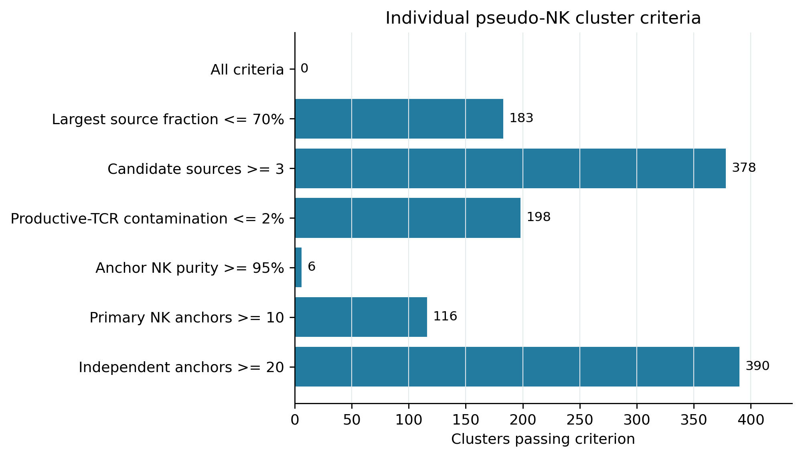
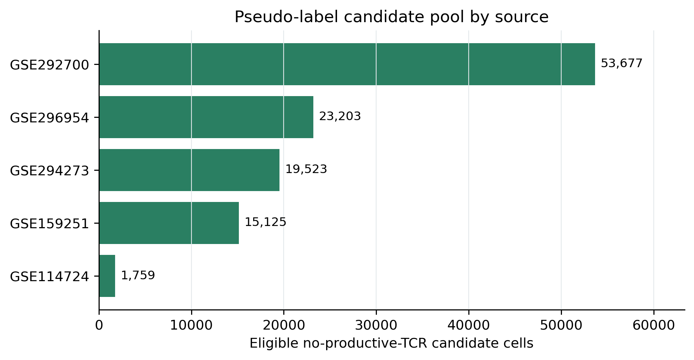

Execution date: 16 August 2026. This report audits the recovered development sidecar, A100 scVI fit, repeated RAPIDS clustering, and expression-independent pseudo-NK consensus. Locked validation cohorts were excluded throughout.
Staging, GPU integration, and clustering passed their technical contracts: the sidecar contains 4,023,462 cells by 4,000 common HVGs, scVI produced a finite 30-dimensional latent representation on the A100 without CPU fallback, and all 18 Leiden partitions were written with a verified SHA-256 checksum.
The pseudo-label contract failed scientifically. Six clusters reached at least 95% NK purity among independent anchors and no more than 2% productive-TCR contamination. Each also passed the anchor-count and multi-source-presence rules, but 87%-90% of its eligible candidate cells came from one dataset, exceeding the frozen 70% single-source cap. Therefore no cluster qualified in any run and no cell could receive the required 80% agreement.

| check | status | detail |
|---|---|---|
| Recovered sparse staging | PASS | 4,023,462 cells x 4,000 HVGs |
| Locked cohorts excluded | PASS | Zero locked-cohort cells in staging and consensus |
| Source H5ADs unchanged | PASS | 6/6 size/mtime pairs unchanged |
| A100 scVI fit | PASS | 30 latent dimensions; 22.6 minutes |
| RAPIDS partitions | PASS | 9 global + 9 boundary runs |
| Partition checksum | PASS | 90e83ec83986358a015885e02e29d06eacf726d928e02b2e90428d5c09947a63 |
| Boundary localization | WARN | 3,978,014/4,023,462 cells (98.87%) |
| Qualifying clusters | FAIL | 0/396 clusters |
| Selected pseudo-NK cells | FAIL | 0/113,287 eligible cells |
| Classifier fitting | PASS | Not performed |
The expression-independent boundary was defined as the union of global clusters containing both a dual-annotation primary NK anchor and a productive-TCR anchor in at least one global run. It included 3,978,014 cells (98.87% of the sidecar), indicating that the global clusters were too broad for this union to localize the biological T/NK boundary.


These are the only clusters that passed the frozen purity and productive-TCR contamination limits. Their sole failing field is maximum_candidate_source_fraction.
| run | cluster | n_cells | n_primary_nk_anchors | n_productive_tcr_anchors | anchor_nk_purity | productive_tcr_contamination | n_candidate_cells | n_candidate_sources | dominant_candidate_source | maximum_candidate_source_fraction |
|---|---|---|---|---|---|---|---|---|---|---|
| global_r1.2_s11 | 12 | 320717 | 19755 | 328 | 98.367% | 0.102% | 2577 | 5 | GSE292700 | 86.923% |
| global_r1.2_s29 | 12 | 315674 | 19751 | 308 | 98.465% | 0.098% | 2544 | 5 | GSE292700 | 88.168% |
| global_r1.2_s47 | 10 | 222689 | 17221 | 263 | 98.496% | 0.118% | 2438 | 5 | GSE292700 | 88.187% |
| boundary_r1_s11 | 18 | 396243 | 20267 | 799 | 96.207% | 0.202% | 4307 | 5 | GSE292700 | 89.459% |
| boundary_r1_s29 | 16 | 402444 | 20267 | 801 | 96.198% | 0.199% | 4285 | 5 | GSE292700 | 87.655% |
| boundary_r1_s47 | 19 | 385259 | 20113 | 813 | 96.115% | 0.211% | 4267 | 5 | GSE292700 | 89.688% |
| Run | Cluster | NK anchors | TCR anchors | NK purity | TCR/cell | Dominant source | Source share |
|---|---|---|---|---|---|---|---|
| global_r1.2_s11 | 12 | 19755 | 328 | 98.367% | 0.102% | GSE292700 | 86.923% |
| global_r1.2_s29 | 12 | 19751 | 308 | 98.465% | 0.098% | GSE292700 | 88.168% |
| global_r1.2_s47 | 10 | 17221 | 263 | 98.496% | 0.118% | GSE292700 | 88.187% |
| boundary_r1_s11 | 18 | 20267 | 799 | 96.207% | 0.202% | GSE292700 | 89.459% |
| boundary_r1_s29 | 16 | 20267 | 801 | 96.198% | 0.199% | GSE292700 | 87.655% |
| boundary_r1_s47 | 19 | 20113 | 813 | 96.115% | 0.211% | GSE292700 | 89.688% |

| Dataset | Eligible candidates | Pool share | Selected pseudo-NK |
|---|---|---|---|
| GSE114724 | 1759 | 1.55% | 0 |
| GSE159251 | 15125 | 13.35% | 0 |
| GSE292700 | 53677 | 47.38% | 0 |
| GSE294273 | 19523 | 17.23% | 0 |
| GSE296954 | 23203 | 20.48% | 0 |
Do not fit the planned V4.2 classifier from these pseudo-labels. Relaxing the 70% cap after seeing this result would be outcome-driven tuning and would reintroduce the source-label shortcut the cap was designed to prevent.
The next defensible iteration should repair the reference design rather than lower the purity standard: source-balance the eligible candidate construction before graph inference; increase independent, confidently annotated NK anchors from multiple development datasets; use finer local neighborhoods or anchor-neighborhood propagation instead of a union of very broad Leiden clusters; and retain the locked cohorts unchanged for nested comparison against V2 and V3.
e70f1fc2f343011acb2f027a1a32fce2ec19467234e7236798bb42cdcaa1693165b319ec9bc7b73cd641b09e0f311ce7a57bc35ea62957524a0bd2de87c57659191fe373beb827d7f8c63260ffbd066b1bbd08289318fbcb23471eaddfc4b8a990e83ec83986358a015885e02e29d06eacf726d928e02b2e90428d5c09947a63f5b9173afaa011b8534601928cebcf72813e81805dc4f110ea0a58a99e8c8b82